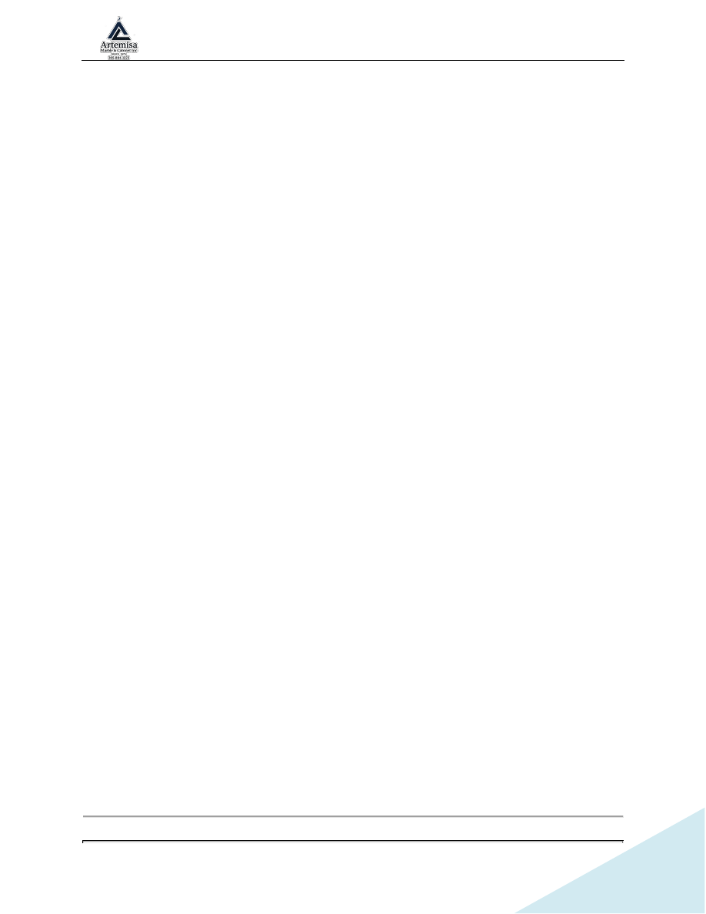

CORTE DE HOLES (SINK / COOKTOP / FAUCET)
Revisión 1.0
Page 1 of 4
CORTE DE HOLES (SINK / COOKTOP / FAUCET)
1. Nombre del Procedimiento
SOP 4 – CORTE DE HOLES (SINK / COOKTOP / FAUCET)
2. Objetivo
Definir el procedimiento seguro y estandarizado para marcar, cortar y pulir los agujeros
en slabs de piedra, garantizando precisión, seguridad y acabado profesional.
Este SOP es crítico porque aquí se realizan los agujeros y los bordes interiores, que son
los más propensos a errores o fracturas por lo que es donde más piezas se rompen.
3. Alcance
Aplica a todos los slabs que requieran:
•
Undermount sink
•
Drop-in sink
•
Cooktop cutout
•
Faucet holes
•
Otros cutouts integrados
Materiales:
✔ Granito
✔ Cuarzo / Quartzite
✔ Mármol
✔ Porcelánico / Sinterizado
4. Equipos y Herramientas
•
Plantillas para cutouts (si aplica)
•
Disco diamantado fino
•
Taladro de agua o manual con guía
•
Palancas y herramientas de ajuste
•
Pads diamantados pequeños para pulido interior